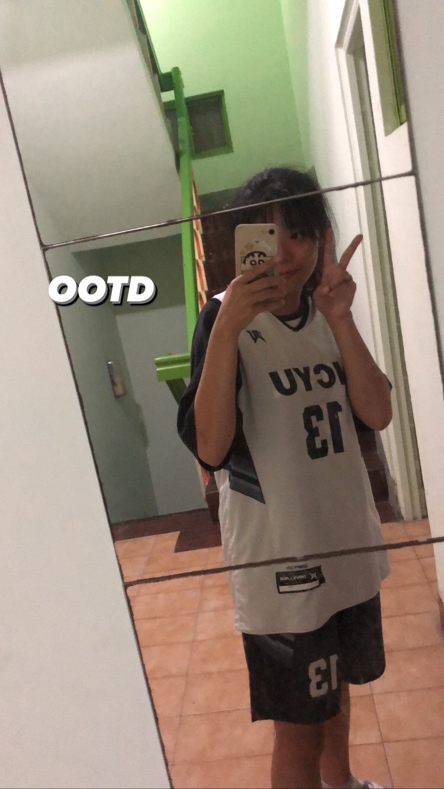
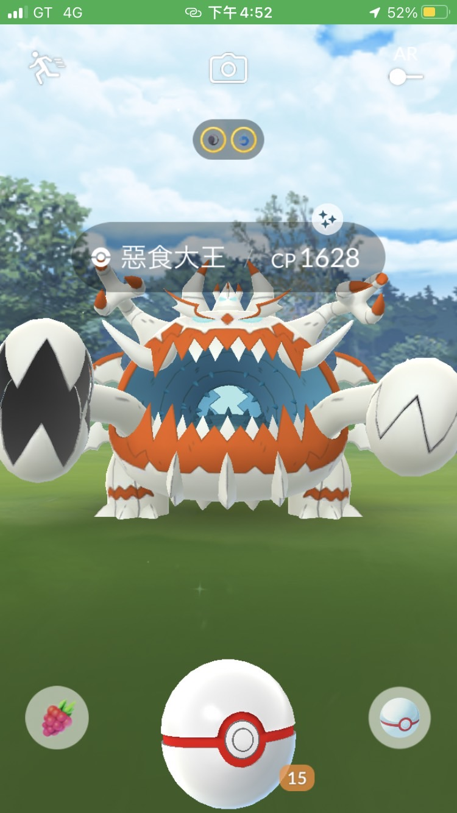

自我介紹、了解更多
興趣、愛好
打籃球
起因:
小時候哥哥總是喜歡去公園打球，但因為他一個人打球很無聊，所以就教我，讓我陪他打
後面也慢慢打出興趣，但因為國高中都沒有女籃，所以一直以來都是隨興打，上大學才碰了校隊跟系隊，比較可惜的是後來校隊解散了，大多現在都在練系隊，也在這個籃球路上認識許多很強的女生!
看動漫
不知道這算不算是一個資工特點(或許是某種刻板印象)
看動漫給我的感覺是:在這充滿幻象的世界，可以讓我暫且對現實世界喘口氣，也或許是動漫裡的主角都很萬能吧，所以自己也會希望像他們一樣。
聽音樂
我沒有特別的偶像，周杰倫給我的憧憬不是人，而是歌
我很愛周杰倫的歌，那感覺是一種童年的回憶，雖然我不是音樂人，不太會判斷怎樣算厲害，但聽音樂會讓我感覺身心靈愉快，也會趕跑不開心的情緒。

女籃球衣

寶可夢
個人特質
持續性
有耐心、不會半途而廢
在學習事務上面，會很努力去搞懂，雖然有時候可能真的很力不從心，但還是會做到自己最好的版本
協調性
與他人溝通、協調
在過去經驗當中，我都是擔任團隊各項組別協調的人，主要是我會試著換成對方的角度去理解，我正在做的工作
自發性
不會排斥學習新東西
自認為自己真的蠻菜雞的，有很多東西都需要學習，所以不會很排斥學習新東西
Back to the top